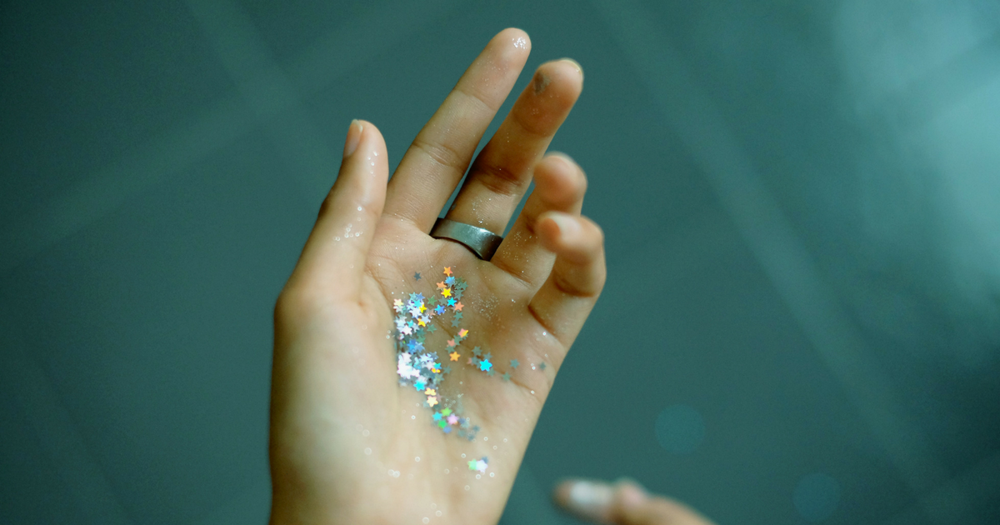

လက်ကလေး ဘာလို့ရောင်

ကျွန်တော်တို့ခန္ဓာကိုယ်က မတည့်တဲ့အရာတစ်ခုခု၊ ပစ္စည်းတစ်ခုခုနဲ့ ထိတွေ့မိတဲ့အခါမှာ ပြန်တုန့်ပြန်တဲ့အနေနဲ့ အနီကွက်တွေ၊ အင်ပြင်တွေထွက်လာတတ်ပါတယ်။ အများအားဖြင့်တော့ စိုးရိမ်ရတဲ့အခြေအနေမဟုတ်ဘူးဆိုပေမဲ့ ပိုးဝင်တာမျိုးနဲ့လည်းဆက်စပ်နေနိုင်တာမို့ သိထားတာမမှားပါဘူး။
.
.
.
ဓာတ်မတည့်တဲ့အရာနဲ့ထိတွေ့ရင် အင်ပြင်တွေအပြင် အရေပြားပေါ်မှာ ယားယံလာမယ်၊ မီးပူလောင်သလိုနာကျင်မယ်၊ ဒါမှမဟုတ်လည်း အဖုအပိမ့်တွေထွက်လာနိုင်ပါတယ်။ ကျွန်တော်တု့ိ လက်ဖဝါးတွေကတော့ တစ်နေကုန် အရာဝတ္ထုပေါင်းစုံနဲ့ထိတွေ့နေရတာကြောင့် အရေပြား ဓာတ်မတည့်မှု အများဆုံးဖြစ်လေ့ရှိပါတယ်။ အခုဒီအောက်မှာတော့ လက်ဖဝါးအရေပြား ဓာတ်မတည့်မှုအများဆုံးဖြစ်ရတဲ့ အကြောင်းတွေကိုဖော်ပြပေးသွားပါ့မယ်။
၁။ ဓာတ်မတည့်ခြင်း
အစားအစာကြောင့်သော်လည်းကောင်း၊ သောက်သုံးတဲ့၊ လိမ်းလိုက်တဲ့ ဆေးဝါးတစ်ခုခုက ကိုယ်နဲ့မတည့်တဲ့အခါမှာ သော်လည်းကောင်း ဓာတ်မတည့်တဲ့တုန့်ပြန်မှုတွေ ဖြစ်ပေါ်လာပါတယ်။ အရေပြားယားယံတာ၊ အရည်ကြည်ဖုပေါက်တာ၊ အင်ပြင်ထတာတွေဖြစ်ပါမယ်။ တခြား လက္ခဏာတွေအနေနဲ့ အော့အန်ခြင်း၊ ဝမ်းလျှောခြင်း၊ ပါးစပ်ယားယံခြင်း၊ ရောင်ရမ်းခြင်း၊ အသက်ရှူရခက်ခြင်း၊ တံတွေးမျိုရခက်ခြင်းနဲ့ ရုတ်တရက်သွေးလန့်ခြင်းတို့ပါ ဖြစ်စေတတ်ပါတယ်။ ဒီအထဲကမှ ရုတ်တရက်သွေးလန့်ခြင်းကတော့ ဆေးပညာအရ အရေးပေါ်အခြေအနေဖြစ်ပြီး ဒီလိုဖြစ်ပြီဆို နီးစပ်ရာဆေးရုံဆေးခန်းကို အမြန်သွားရောက်ပြသဖို့ လိုအပ်ပါတယ်။
၂။ အရေပြားခြောက်သွေ့သွားခြင်း
အေးတဲ့ရာသီဥတုက သင့်အရေပြားကအဆီဓာတ်ကို အလျင်အမြန်ကုန်ခန်းသွားစေပါတယ်။ ရလဒ်အနေနဲ့ အရေပြားခြောက်သွေ့ခြင်း ဖြစ်လာပါတယ်။ ခြောက်သွေ့သွားတဲ့အရေပြားက ယားယံတာ၊ ဖူးရောင်တာ၊ အရေခွံကွာတာတွေပါ ဖြစ်လာတတ်ပါတယ်။ ဒီလိုယားယံလို့ ကုတ်လိုက်မိတဲ့အခါ အရေပြားစုတ်ပြဲပြီး သွေးပါထွက်လာနိုင်ပါတယ်။
၃။ ပွေး
အတွေ့များတဲ့ဒီအရေပြားပြဿနာက လူကိုအင်မတန် စိတ်အနှောင့်အယှက်ပေးပါတယ်။ ကံကောင်းတဲ့အချက်က သူ့ကိုပျောက်ကင်းအောင် ကုသနိုင်ပါတယ်။ အရေပြားပေါ်မှာ အကွင်းလိုက်ကလေးတွေ မြင်ရပြီး ဘေးနှုတ်ခမ်းသားတွေက အနည်းငယ် ကြွတက်နေတတ်ပါတယ်။ လက်ဖဝါးမှာ ဆိုရင်တော့ ဒီလိုပုံနဲ့မြင်ရမှာမဟုတ်ပါဘူး။ လက်ဖဝါးအရေပြားမှာပွေးပေါက်ရင် အရေပြား ခြောက်သွေ့တာ၊ အက်ကွဲတာ၊ အရေပြားထူလာတာကနေ ရောင်ရမ်းတဲ့အထိ ဖြစ်နိုင်ပါတယ်။
၄။ Contact Dermatitis
နှင်းခူတစ်မျိုးဖြစ်ပြီး ကိုယ့်အရေပြားနဲ့မတည့်တဲ့ ပစ္စည်းတစ်ခုခုကို ကိုင်လိုက်မိရင် လက်ဖဝါးမှာ ချက်ခြင်းထွက်ပေါ်လာတတ်ပါတယ်။ အများအားဖြင့် အိမ်သန့်ရှင်းရေးလုပ်ရင်း ဖုန်တွေ၊ အညစ်အကြေးတွေကို လက်ဗလာနဲ့ ကိုင်လိုက်မိတဲ့အခါမျိုး၊ ဒါမှမဟုတ်လည်း ဆပ်ပြာဆီတွေကို လက်ဗလာနဲ့ ကိုင်တွယ်မိတဲ့အခါမျိုးတွေမှာ ဖြစ်တတ်ပါတယ်။ ဖုန်တွေအပြင် တချို့သူတွေကတော့ မိတ်ကပ်၊ သတ္တု၊ ကြေးနီ၊ ရာဘာလက်အိတ်၊ လက်ဝတ်ရတနာ၊ အဆိပ်ရှိအပင် အစရှိတာတွေကို ထိတွေ့မိရင်လည်း ထွက်ပေါ်လာတတ်ပါတယ်။
၅။ ဂျွတ်ပွေးနာ
ဒါကတော့ အရေပြားပြဿနာတစ်မျိုးဖြစ်ပြီး လက်ဖဝါးအပါအဝင် ခန္ဓာကိုယ်အစိတ်အပိုင်းတွေကို ရောင်ရမ်းစေတတ်ပါတယ်။ ဒီရောဂါ မျိုးရိုးလိုက်တတ်ပြီး အရေပြားမှာ ထိခိုက်ဒဏ်ရာတစ်ခုခု ရသွားရာက တစ်ဆင့်စတင်ဖြစ်ပေါ်တတ်ပါတယ်။ လက်ဖဝါးမှာ ရောင်ရမ်းတာအပြင် နီရဲခြင်း၊ အရေပြားခြောက်သွေ့သွားခြင်း၊ အရေပြားမှာ အဖတ်လိုက်ကွာကျခြင်း၊ အက်ကွဲခြင်း စတာတွေပါ ဖြစ်ပေါ်တတ်ပါတယ်။
၆။ Hand၊ Foot and Mouth Disease
ဒီရောဂါ အင်မတန်မှကို ကူးစက်လွယ်တဲ့ရောဂါတစ်ခုဖြစ်ပြီး အထူးသဖြင့် ကလေးတွေကြားမှာ ဖြစ်လေ့ရှိပါတယ်။ EV-71 လို့ခေါ်တဲ့ ဗိုင်းရပ်စ်ကြောင့်ဖြစ်တာဖြစ်ပြီး ရောဂါဖြစ်တဲ့ ကလေးငယ်တွေရဲ့ ပါးစပ်၊ လက်နဲ့ခြေထောက်တွေမှာ အနာတွေ၊ အနီကွက်တွေ ဖြစ်ပေါ်လာတတ်ပါတယ်။ တခြား လက္ခဏာတွေကတော့ ဖျားနာတာ၊ လည်ချောင်းနာတာ၊ လျှာမှာ အဖုလေးတွေပေါက်တာ၊ လက်ဖဝါးခြေဖဝါးတွေ နီရဲလာတာနဲ့ အစားအသောက်ပျက်တာတို့ပဲ ဖြစ်ပါတယ်။ ဒီရောဂါက အင်မတန်ကြောက်ဖို့ကောင်းတာကြောင့် မသင်္ကာစရာလက္ခဏာတွေ တွေ့ရှိရတာနဲ့ ဆရာဝန်နဲ့ ချက်ချင်းပြသဖို့ လိုအပ်ပါတယ်။
၇။ Dyshidroic Eczema
သူလည်းပဲ နှင်းခူတစ်မျိုးဖြစ်ပြီး ရောဂါဖြစ်တဲ့သူရဲ့ လက်ဖဝါးမှာ အရည်ကြည်ဖုသေးသေးလေးတွေ စုပြီးပေါက်လာလေ့ရှိပါတယ်။ အစုအစုလိုက် ထွက်လေ့ရှိပြီး နာကျင်မှုခံစားရတတ်ပါတယ်။ အရည်ကြည်ဖုတွေက ၃ ပတ် အတွင်းမှာ ပေါက်ပြီး အနာကျက်သွားလေ့ ရှိပါတယ်။ ဒီနှင်းခူဖြစ်နေရင် လက်ဖဝါးတင်မကဘဲ လက်ချောင်း၊ ခြေဖဝါးတွေမှာပါ အရည်ကြည်ဖုတွေ ထွက်လာမှာ ဖြစ်ပါတယ်။ အများအားဖြင့် အမျိုးသမီးတွေမှာ တွေ့ရတတ်ပြီး ကုသဖို့ဆေးနည်းလည်း မရှိသေး
၈။ Impetigo အရေပြားနာ
နောက်ထပ်ကလေးတွေမှာ အတွေ့ရများတဲ့ အရေပြားပြဿနာတစ်ခုကတော့ ပိုးဝင်လို့ဖြစ်တဲ့ Impetigo အရေပြားနာပဲဖြစ်ပါတယ်။ Impetigo ဖြစ်ရင် မျက်နှာ၊ လည်ပင်းနဲ့ လက်တွေမှာ အရည်ကြည်ဖုတွေ ထွက်လာပါမယ်။ ကလေးတွေကနုနယ်တာမို့ ပိုအဖြစ်များပြီး တခြား အရေပြားနာတွေ ဥပမာ နှင်းခူလိုမျိုးနဲ့ တွဲဖြစ်တတ်ပါတယ်။ နောက်တစ်ခုရှိသေးတာက Impetigo အရေပြားနာက တစ်ယောက်ကနေ တစ်ယောက်ကို ပျံ့နှံ့တတ်သလို ရောဂါရှိတဲ့သူ ကိုင်တွယ်ထားတဲ့အရာဝတ္ထုတွေကနေလည်း ကူးစက်နိုင်ပါသေးတယ်။ ယားလို့ကုတ်ရာကနေ ခန္ဓာကိုယ်ရဲ့ တခြားနေရာတွေကိုပါ ပျံ့နှံ့သွားတတ်ပါတယ်။
လက်ဖဝါးမှာ ယားနာဖြစ်တာက အများအားဖြင့်တော့ ရက်ပိုင်းအတွင်း သက်သာ ပျောက်ကင်းသွားတာချည်းပါပဲ။ သို့ပေမဲ့ တချို့အရေပြားပြဿနာတွေကျတော့ ပိုအခြေအနေ ဆိုးတတ်ပါတယ်။ ရက်သတ္တပတ် နှစ်ပတ်ထပ်ကျော်လို့မှ မပျောက်ဘူး ဖြစ်နေတယ်၊ ပိုဆိုးလာတယ်၊ ဒါမှမဟုတ် ဖျားနာတာလို့ ပြဿနာမျိုးနဲ့ တွဲဖြစ်လာတယ်ဆိုရင်တော့ ဆရာဝန်နဲ့ ပြသကြည့်ဖို့ လိုအပ်ကြောင်းပြောကြားရင်း နိဂုံးချုပ်လိုက်ရပါတယ်။
Source-Dr. Barry